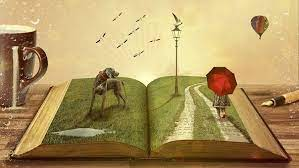

Waarom Zou Je Een Boek Lezen?
Een boek neemt je mee op reis zonder dat je je bagage nodig hebt. Je kunt zelfs naar een andere tijd reizen, of naar werelden die (nog) niet bestaan.
Heb je een moeilijke dag achter de rug? Even vergeten dat er morgen iets akeligs op je wacht? Wil je de tijd doden zonder dat je je nagels stuk bijt? Pak een boek!
Nog Meer Voordelen
Lezen is meer dan amusement of een ontsnapping uit de realiteit. Je bekijkt de wereld vanuit het oogpunt van een personage of een auteur die een punt wil maken. Dit helpt om de wereld beter te begrijpen, want je leert zo verschillende opvattingen kennen.
Je hoeft tegenwoordig niet eens meer een boek mee te zeulen. We hebben e-books en het is niet noodzakelijk om daar een duur apparaat voor te kopen. Op je telefoon kun je je e-book als pdf document opslaan en altijd erbij pakken.
Geen zin in kletsen? Ga lezen, je hebt je boek toch altijd bij je in je telefoon. Een wijze vrouw zei eens: Een boek in de hand, houdt ongewenste gesprekken op afstand.

Wees niet bang, je bent niet gelijk een suffe saaie boekenwurm. Daar is echt veel meer voor nodig.